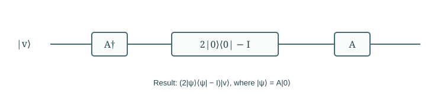

Chapter 07
Quantum Search and Amplitude Amplification
A phase mark does not itself make a useful answer more likely. We first solve a four-item search completely, then uncover the rotation that generalizes the calculation.
In this chapter · 4 sections · 12 topics
7.1
Four-Item Search
With four candidates, every amplitude can be followed without approximation.
7.1.1 Search predicates and classical queries§
Search a set of \(N\) labels using a predicate \(f(x)\) that is one on marked items. An ordinary query tests a candidate. With one uniformly located marked item, classical search needs order \(N\) queries for constant success probability; checking all items settles the worst case. Begin with \(N=4\) and mark \(11\). We count access to the predicate, while keeping state preparation and other operations visible. The task is to output a marked label, not merely estimate the number of them.
7.1.2 State preparation and phase marking§
Two Hadamards prepare \(\ket s=(\ket{00}+\ket{01}+\ket{10}+\ket{11})/2\). A phase oracle \(O_f\ket x=(-1)^{f(x)}\ket x\) changes the amplitudes to \((1,1,1,-1)/2\). Every squared magnitude is still one quarter. Measuring now gains nothing. The oracle has created a relative sign that a subsequent operation can use. A phase oracle may be supplied directly or built by kickback or compute–phase–uncompute; its query cost must be stated accordingly.
7.1.3 Reflection and final amplitudes§
Apply \(D=2\ket s\bra s-I\). For an amplitude list \(a_x\), it sends each entry to \(2\mu-a_x\), where \(\mu\) denotes the arithmetic mean of the entries. After marking, the mean is \(1/4\): the three \(+1/2\) entries become zero, and the \(-1/2\) entry becomes one. One iteration \(DO_f\) therefore finds the marked label with certainty. The operation is a reflection about the prepared direction; it is not a measurement that estimates the mean from samples.

7.2
Search Geometry
Grouping marked and unmarked components reduces the analysis to a plane.
7.2.1 Good and bad subspaces§
Suppose \(0
7.2.2 Initial success amplitude§
Write \(\sin\theta=\sqrt{M/N}\), with \(0<\theta<\pi/2\). Then \(\ket s=\sin\theta\ket G+\cos\theta\ket B\). Its initial success probability is \(\sin^2\theta=M/N\). The geometry uses the bad direction as angle zero and the good direction as angle \(\pi/2\). This choice fixes signs in the rotation calculation. Although the underlying register may have many amplitudes, the two reflections preserve this plane, so one angle is enough to track the entire search evolution.
7.2.3 Reflections and rotations§
The oracle negates the good component and retains the bad component: a reflection across the bad axis. The diffusion operation reflects across \(\ket s\). Acting in this order, their product increases the state’s angle from the bad axis by \(2\theta\). Reflection matrices also verify the result algebraically. A geometric drawing is useful because it explains both the increase in success probability and its eventual decrease: a rotation continues past the good axis unless we stop it.
7.3
Grover Iteration
An algorithm must choose when to stop the rotation, not merely repeat a useful-looking step.
7.3.1 Amplitude evolution§
After \(k\) Grover iterations, \[\ket{\psi_k}=\sin((2k+1)\theta)\ket G+\cos((2k+1)\theta)\ket B,\qquad p_k=\sin^2((2k+1)\theta).\] The initial angle contributes one \(\theta\); each iteration contributes two more. All marked labels have equal amplitudes in this uniform-search setting, so conditional on success the result is uniform over the marked set. The success probability depends on the marked fraction, not on which labels happen to be marked.
7.3.2 Iteration count and overshooting§
Choose a nonnegative integer \(k\) near \(\pi/(4\theta)-1/2\) to bring the first peak close to the good axis. For a small marked fraction, \(\theta\approx\sqrt{M/N}\), yielding order \(\sqrt{N/M}\) iterations. Integer rounding usually prevents exact certainty; the four-item, one-mark case is special. More iterations are not always better. With \(N=4,M=1\), the probabilities for \(k=0,1,2\) are \(1/4,1,1/4\). This illustrates why the stopping rule is part of the algorithm rather than an implementation detail.
7.3.3 Unknown marked fraction and verification§
If the marked fraction is unknown, a fixed peak estimate may overshoot. A standard approach chooses a random iteration count from a gradually expanding range, measures, and verifies the candidate. For \(M>0\), suitable schedules retain expected order \(\sqrt{N/M}\) query cost. If \(M=0\), verification never succeeds; an unbounded search cannot certify absence. A bounded-error decision version uses a bounded schedule and reports failure with a specified error guarantee when marked items exist. Distinguish that guarantee from an exact proof that none exists. If all items are marked, direct sampling already succeeds.
Further detail: Boyer, Brassard, Høyer, and Tapp: Tight bounds on quantum searching.
7.4
General Amplitude Amplification
The same construction works with a general coherent preparation and a success test.
7.4.1 Arbitrary state preparation§
Uniform preparation is not essential. Let \(A\ket0=\ket\psi\), and let \(P_G\) project onto the states counted as successful. If \(0
7.4.2 Reflection using preparation and its inverse§
Reflection about the prepared state is \[R_\psi=2\ket\psi\bra\psi-I=A(2\ket0\bra0-I)A^\dagger.\] Applied to an existing state, the rightmost inverse acts first. Pair this with \(I-2P_G\), which negates successful components. Their product rotates toward the good direction just as in search. The construction requires coherent access to \(A\), its inverse, and the success test. A destructive measurement of success is not a replacement for the coherent phase reflection.

7.4.3 Success probability and resource cost§
For small \(p\), direct independent trials need order \(1/p\) preparations for constant success probability. Amplitude amplification needs order \(1/\sqrt p\) iterations, each using the preparation, its inverse, and a coherent success test. If their costs are \(C_A\) and \(C_G\), the resulting cost is of order \((C_A+C_G)/\sqrt p\), under the stated access assumptions. Verification and iteration selection must also be included. The quadratic improvement is in repeated use of these resources; expensive state loading or oracle construction can dominate the total runtime.